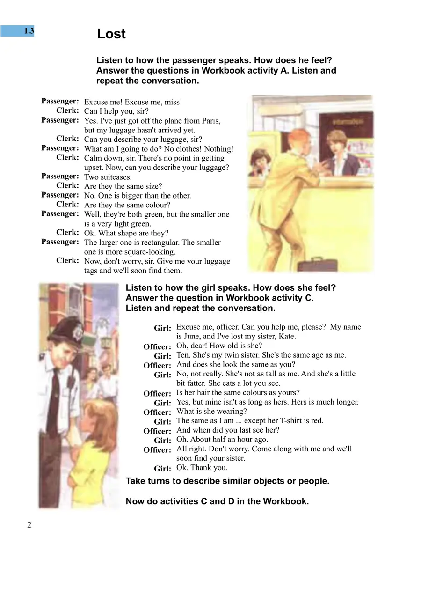

1.3 Lost Listen to how the passenger speaks. How does he feel? Answer the questions in Workbook activity A. Listen and repeat the conversation.
Passenger: Excuse me! Excuse me, miss! Clerk: Can I help you, sir? Passenger: Yes. I've just got off the plane from Paris, but my luggage hasn't arrived yet. Clerk: Can you describe your luggage, sir? Passenger: What am I going to do? No clothes! Nothing! Clerk: Calm down, sir. There's no point in getting upset. Now, can you describe your luggage? Passenger: Two suitcases. Clerk: Are they the same size? Passenger: No. One is bigger than the other. Clerk: Are they the same colour? Passenger: Well, they're both green, but the smaller one is a very light green. Clerk: Ok. What shape are they? Passenger: The larger one is rectangular. The smaller one is more square-looking. Clerk: Now, don't worry, sir. Give me your luggage tags and we'll soon find them.
Listen to how the girl speaks. How does she feel? Answer the question in Workbook activity C. Listen and repeat the conversation.
Girl: Excuse me, officer. Can you help me, please? My name is June, and I've lost my sister, Kate. Officer: Oh, dear! How old is she? Girl: Ten. She's my twin sister. She's the same age as me. Officer: And does she look the same as you? Girl: No, not really. She's not as tall as me. And she's a little bit fatter. She eats a lot you see. Officer: Is her hair the same colours as yours? Girl: Yes, but mine isn't as long as hers. Hers is much longer. Officer: What is she wearing? Girl: The same as I am ... except her T-shirt is red. Officer: And when did you last see her? Girl: Oh. About half an hour ago. Officer: All right. Don't worry. Come along with me and we'll soon find your sister. Girl: Ok. Thank you. Take turns to describe similar objects or people. Now do activities C and D in the Workbook.
Is her hair the same colours as yours? بصيغة الجمع colours، وحُفظت حرفياً هنا مع أن القياس اللغوي للشخص الواحد colour.[
{
"num": 1,
"question": "Which two numbered suitcases belong to the passenger?",
"model_answer": "Numbers 5 and 2 (two suitcases: #5 is the larger dark green rectangular suitcase, and #2 is the smaller square-looking light case).",
"explain_ar": "وصف المسافر: حقيبتان (Two suitcases) إحداهما أكبر ومستطيلة داكنة (#5)، والأخرى أصغر فاتحة اللون ومربعة الشكل نسبياً (#2)."
}
][
{
"num": 1,
"question": "Which girl (1–5) is Kate?",
"model_answer": "Girl 3 (longer loose hair, wearing a T-shirt and trousers, shorter than #1/#5 and slightly heavier).",
"explain_ar": "المواصفات: ليست طويلة (#1 و#5 طويلتان)، ذات شعر طويل منسدل (ليس ذيل حصان مثل #2 أو ضفيرتين قصيرتين وفستاناً مثل #4)، وترتدي قميص T-shirt وبنطالاً."
}
][
{
"num": 1,
"question": "Somebody is upset and is speaking loudly.",
"model_answer": "Calm down. There's no point in getting upset.",
"explain_ar": "كما قالت الموظفة للمسافر في الحوار 1."
},
{
"num": 2,
"question": "Somebody thinks something bad is going to happen but you think they are wrong.",
"model_answer": "Don't worry.",
"explain_ar": "كما قال الموظف والشرطي لطمأنة الشخص."
},
{
"num": 3,
"question": "Somebody tells you some bad news.",
"model_answer": "Oh, dear!",
"explain_ar": "تعبير تعاطف ورد على لسان الشرطي عند سماع ضياع الطفلة."
}
][
{
"label_ar": "هل يُؤكل ونوعه (Can you eat it? / Is it a ...?)",
"placeholder": "Yes, you can eat it. It is a curved yellow fruit."
},
{
"label_ar": "لونه ومكان وجوده (What colour / Can you find it in Yemen?)",
"placeholder": "It is yellow, and you can easily find it in Yemen (a banana)."
}
]{
"pb_text_vs_image": "طُوبق النص المستخرج من PB PDF ص 4 مع الصورة عالية الدقة؛ استخرجنا الحوارين كاملين مع رصد صيغة الجمع المطبوعة same colours في جملة الضابط.",
"wb_ocr_vs_image": "طُوبقت أنشطة WB ص 3–4 (PDF 4–5) مع مخرجات tesseract.js eng، وصُححت التسميات فوق الصور المرسومة ورُصدت العبارة المطبوعة You partner."
}